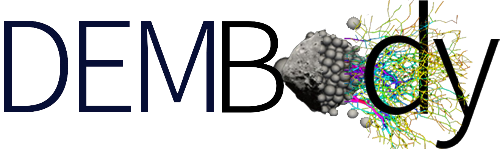

 DEMBody
Welcome to DEMBody!
Gallery
Featured work
Tidal disruption as the origin of Phobos grooves
The formation of top-shaped asteroids
Controlled motion of a asteroid hopping rover
The resistance law in spacecraft-regolith interaction
Asteroid surface impact sampling
Changelog
Quick User Guide
API documentation
Useful links
DEMBody
»
Featured work
View page source
Featured work
¶
Some academic works using DEMBody code.
Tidal disruption as the origin of Phobos grooves
The formation of top-shaped asteroids
Controlled motion of a asteroid hopping rover
The resistance law in spacecraft-regolith interaction
Asteroid surface impact sampling